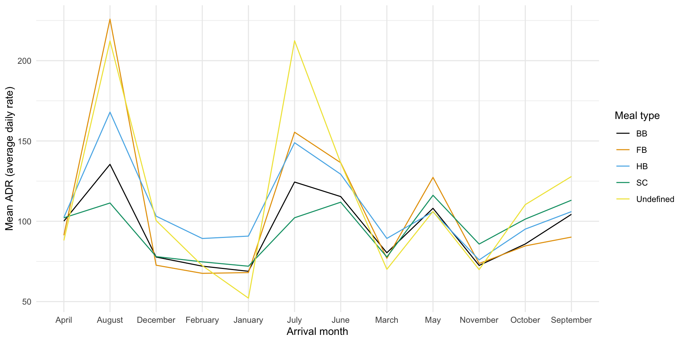

gss_cat gets loaded with the forcats package in the tidyverse use gss_cat to answer the following questions (I’d use a graph, but do whatever you’d like!)
gss_cat
# A tibble: 21,483 × 9
year marital age race rincome partyid relig denom tvhours
<int> <fct> <int> <fct> <fct> <fct> <fct> <fct> <int>
1 2000 Never married 26 White $8000 to 9999 Ind,near … Prot… Sout… 12
2 2000 Divorced 48 White $8000 to 9999 Not str r… Prot… Bapt… NA
3 2000 Widowed 67 White Not applicable Independe… Prot… No d… 2
4 2000 Never married 39 White Not applicable Ind,near … Orth… Not … 4
5 2000 Divorced 25 White Not applicable Not str d… None Not … 1
6 2000 Married 25 White $20000 - 24999 Strong de… Prot… Sout… NA
7 2000 Never married 36 White $25000 or more Not str r… Chri… Not … 3
8 2000 Divorced 44 White $7000 to 7999 Ind,near … Prot… Luth… NA
9 2000 Married 44 White $25000 or more Not str d… Prot… Other 0
10 2000 Married 47 White $25000 or more Strong re… Prot… Sout… 3
# ℹ 21,473 more rows
Which religions watch the least TV?
Do married people watch more or less TV than single people?
Try it: fct_reorder
Use rincome_summary to construct a dotplot of rincome against age.
Reorder rincome by age
rincome_summary<-gss_cat%>%group_by(rincome)%>%summarize( age =mean(age, na.rm =TRUE), tvhours =mean(tvhours, na.rm =TRUE), n =n())
Try it fct_collapse
Collapse the marital variable to have levels Married, not_married, and No answer
Include "Never married", "Divorced", and “Widowed" in not_married
Additional examples (may or may not have time)
Hotel bookings by month
# From TidyTuesday: https://github.com/rfordatascience/tidytuesday/blob/master/data/2020/2020-02-11/readme.mdhotels<-read_csv("https://raw.githubusercontent.com/rfordatascience/tidytuesday/master/data/2020/2020-02-11/hotels.csv", show_col_types =FALSE)
Run the code and examine the plot. How are the months ordered? What would be a better order?
hotels%>%group_by(hotel, arrival_date_month)%>%# group by hotel type and arrival monthsummarize(mean_adr =mean(adr))%>%# calculate mean adr for each groupggplot(aes( x =arrival_date_month, # x-axis = arrival_date_month y =mean_adr, # y-axis = mean_adr calculated above group =hotel, # group lines by hotel type color =hotel)# and color by hotel type)+geom_line()+# use lines to represent datatheme_minimal()+# use a minimal themelabs( x ="Arrival month", # customize labels y ="Mean ADR (average daily rate)", title ="Comparison of resort and city hotel prices across months", subtitle ="Resort hotel prices soar in the summer while ciry hotel prices remain relatively constant throughout the year", color ="Hotel type")
Reorder the months on the x-axis (levels of arrival_date_month) in a way that makes more sense. Use a function from the forcats package.
More hotel bookings by room type
Create a bar chart of the reserved_room_type.
Create another bar chart where you have bars for the top three room types and an “other” category lumping the other room types together.
More hotel bookings by room type
Run the code and examine the plot. How are the months ordered? What would be a better order?
hotels%>%group_by(meal, arrival_date_month)%>%# group by meal type and arrival monthsummarize(mean_adr =mean(adr))%>%# calculate mean adr for each groupggplot(aes( x =arrival_date_month, # x-axis = arrival_date_month y =mean_adr, # y-axis = mean_adr calculated above group =meal, # group lines by meal type color =meal)# and color by meal type)+geom_line()+# use lines to represent datatheme_minimal()+# use a minimal themelabs( x ="Arrival month", # customize labels y ="Mean ADR (average daily rate)", color ="Meal type")+ggthemes::scale_color_colorblind()

Reorder the levels of meal type in a way that makes more sense. Use a function from the forcats package to do this.
Source Code
---title: "12-factors"format: html---```{r setup, include=FALSE}knitr::opts_chunk$set(echo = TRUE, message = FALSE, warning = FALSE)library(tidyverse)library(lubridate)library(patchwork)library(ggthemes)```# Warm Up`gss_cat` gets loaded with the `forcats` package in the `tidyverse` use `gss_cat` to answer the following questions (I'd use a graph, but do whatever you'd like!) ```{r}gss_cat```1. Which religions watch the least TV?2. Do married people watch more or less TV than single people?# Try it: `fct_reorder`Use `rincome_summary` to construct a dotplot of `rincome` against `age`.Reorder `rincome` by `age````{r}rincome_summary <- gss_cat %>%group_by(rincome) %>%summarize(age =mean(age, na.rm =TRUE),tvhours =mean(tvhours, na.rm =TRUE),n =n() )```# Try it `fct_collapse`Collapse the `marital` variable to have levels `Married`, `not_married`, and `No answer`Include `"Never married"`, `"Divorced"`, and "`Widowed"` in `not_married`# Additional examples (may or may not have time)## Hotel bookings by month```{r}# From TidyTuesday: https://github.com/rfordatascience/tidytuesday/blob/master/data/2020/2020-02-11/readme.mdhotels <-read_csv("https://raw.githubusercontent.com/rfordatascience/tidytuesday/master/data/2020/2020-02-11/hotels.csv", show_col_types =FALSE)```1. Run the code and examine the plot. How are the months ordered? What would be a better order?```{r fig.width=10}hotels %>% group_by(hotel, arrival_date_month) %>% # group by hotel type and arrival month summarize(mean_adr = mean(adr)) %>% # calculate mean adr for each group ggplot(aes( x = arrival_date_month, # x-axis = arrival_date_month y = mean_adr, # y-axis = mean_adr calculated above group = hotel, # group lines by hotel type color = hotel) # and color by hotel type ) + geom_line() + # use lines to represent data theme_minimal() + # use a minimal theme labs( x = "Arrival month", # customize labels y = "Mean ADR (average daily rate)", title = "Comparison of resort and city hotel prices across months", subtitle = "Resort hotel prices soar in the summer while ciry hotel prices remain relatively constant throughout the year", color = "Hotel type" )```2. Reorder the months on the x-axis (levels of `arrival_date_month`) in a way that makes more sense. Use a function from the `forcats` package.## More hotel bookings by room type1. Create a bar chart of the `reserved_room_type`.2. Create another bar chart where you have bars for the top three room types and an "other" category lumping the other room types together.## More hotel bookings by room type1. Run the code and examine the plot. How are the months ordered? What would be a better order?```{r fig.width=10}hotels %>% group_by(meal, arrival_date_month) %>% # group by meal type and arrival month summarize(mean_adr = mean(adr)) %>% # calculate mean adr for each group ggplot(aes( x = arrival_date_month, # x-axis = arrival_date_month y = mean_adr, # y-axis = mean_adr calculated above group = meal, # group lines by meal type color = meal) # and color by meal type ) + geom_line() + # use lines to represent data theme_minimal() + # use a minimal theme labs( x = "Arrival month", # customize labels y = "Mean ADR (average daily rate)", color = "Meal type" ) + ggthemes::scale_color_colorblind()```2. Reorder the levels of meal type in a way that makes more sense. Use a function from the `forcats` package to do this.